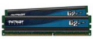

Оперативная память.

ОЗУ в ПК выполняет роль временного буфера хранения информации, т.е. при запуске любого приложения оно частично загружается в ОЗУ=>чем больше ОЗУ,
тем больше можно открывать различные приложения и работать в них. Например играете в игру и слушаете музыку.
В современных компьютерах требуется большое количество ОЗУ, т.к. игры стали обладать большим игровым миром (пространством) и для того, чтобы
вам это всё прогрузить, требуется ОЗУ.
У ОЗУ есть два главных характеристики - количество и частота.
Количество ОЗУ измеряется в мб, сами же планки могут быть: 512, 1024, 2048 и больше. Это влияет на количество возможного хранения различной информации
в них. Частота влияет на скорость работы ОЗУ, т.е. если частота 600 мгц, то ОЗУ загрузит 100мб за 10 с, а если частота 1000 мгц, она эти же 100мб
загрузит за 5 с (цифры приблизительные, просто для того чтобы вы поняли)
И так, есть три вида ОЗУ: DDR1, 2, 3.
Различаются по частоте, входу в материнскую плату. Рассмотрим основные виды ддр 1, 2, 3.
DDR1 - уже устаревший стандарт ОЗУ, частота до 400 мгц.
DDR2 - самая распространенная ОЗУ, частота до 800 мгц.
DDR3 - новая ОЗУ, частота до 2200 мгц.
Для каждого вида памяти нужна разная материнская память, т.е. если в мат.плате слоты для ОЗУ под DDR1, то другие виды памяти не подойдут, и даже
не сможете её установить, т к у каждого вида свои размеры, и у каждого вида ОЗУ есть специальный разрез на разъеме, он должен совпадать с разрезом
на слоте для ОЗУ в мат.плате. Ключ (разрез) сделан для того чтобы не ошибаться и не поставить случайно планку не той стороной.
Не знаю, были ли люди, которые умудрялись бы «забить» в слот не подходящую даже по ключу планку. Если же это сделать попросту сгорит как ОЗУ, так
и материнская плата.
Специфика замещения частот.
А что если материнская плата поддерживает ОЗУ ддр2, а шина у мат.платы только 533 мгц (в документах мат.платы можно узнать), получается вы ставите
планку ддр2 у который частота 800мгц, то работать планка будет на частоте шины, т.е. на 533 мгц.
Вы установили две планки ОЗУ, у каждой из них разная частота, то обе планки будут работать на частоте планки, у которой частота меньше. Установили
две планки памяти, одна 800мгц, другая 600мгц. В таком случае обе планки будут работать на 600 мгц.
В продаже большой выбор компьютеров у нас
на сайте.
Читайте также:
Как правильно выбрать материнскую плату.
Выбор звуковой карты.
Следующая статья:
Как выбрать монитор.